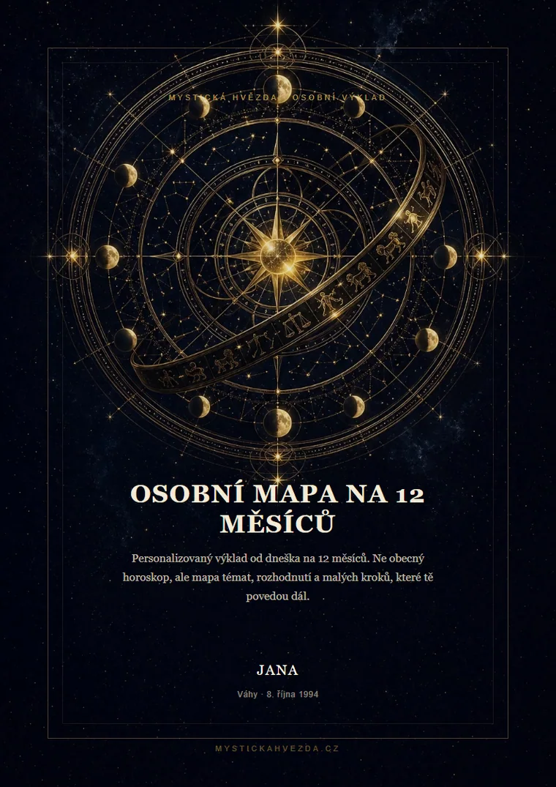
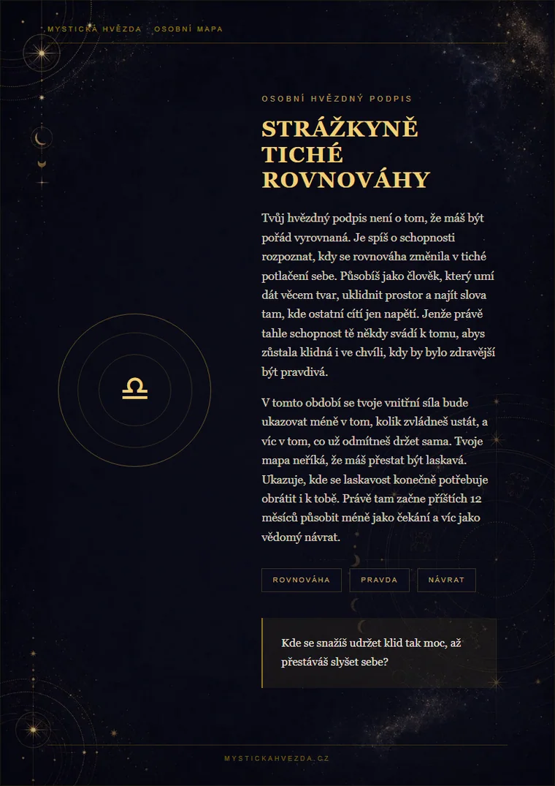
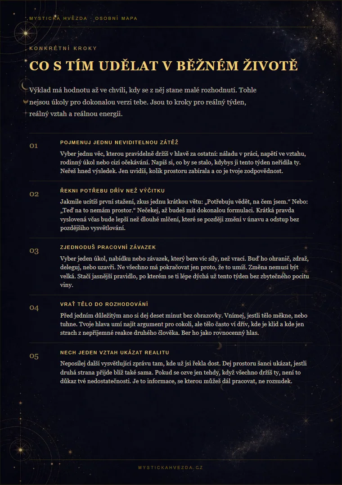
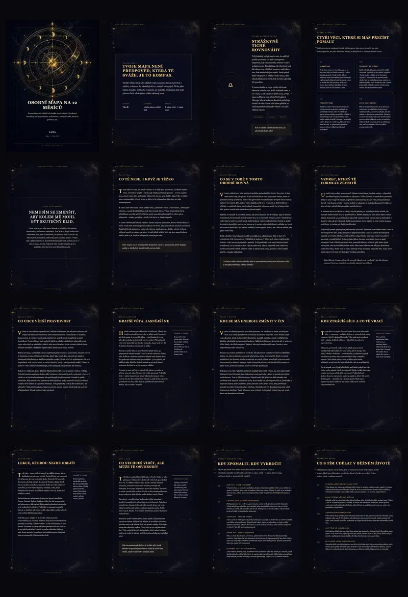

Obálka a osobní zadání
Jméno, znamení a téma, které právě řešíš.
Tvoje Osobní mapa se právě připravuje. PDF pošleme na e-mail během několika minut. Pokud nedorazí do 20 minut, zkontroluj složku hromadná pošta nebo spam.
Objednávka se neztratila. Můžeš se vrátit k formuláři a pokračovat, až budeš chtít.
Když se jedna otázka vrací, další obecný horoskop nestačí. Osobní mapa ti ukáže souvislosti, důležité milníky a konkrétní další kroky.
20stránkové PDF vytvoříme podle tvého data narození, znamení a situace, kterou právě řešíš. Období vždy začíná dnem objednávky a trvá celých 12 měsíců.

Nemusíš psát dlouhý příběh. Stačí pojmenovat, co se vrací. Takhle mapa pracuje s konkrétním tématem, aniž by z něj dělala univerzální radu pro všechny.
„Pořád se vracím k jednomu vztahu. Není vyloženě špatný, ale mám pocit, že v něm ztrácím sebe a neumím si říct, jestli zůstat.“
Nezačne ti říkat, koho milovat nebo opustit. Podívá se na vzorec: kde ustupuješ, co si omlouváš, jak poznáš rozdíl mezi klidem a rezignací.
Jasnější otázky pro další týdny, období, kdy zpozornět, a malé kroky: rozhovor, hranici, zápis nebo pauzu, která ti vrátí vlastní hlas.
Na ukázkách vidíš, jak mapa působí jako celek: tmavý hvězdný vizuál, osobní kapitoly, delší texty a konkrétní kroky místo několika vět, které by mohly patřit komukoliv.



20 stran tě provede od hlavního tématu přes vztahy, práci a energii až ke konkrétním krokům.
Jméno, znamení a téma, které právě řešíš.
Pojmenování energie, kterou teď neseš, a otázka pro celé období.
Hlavní témata, věta období a silné stránky, o které se můžeš opřít.
Vztahy, komunikace, práce, energie, růst i stín a dar v běžném životě.
Pět orientačních bodů: kdy zpozornět, nezrychlovat nebo udělat jasnější krok.
Praktické kroky, krátký rituál, otázky k návratu a závěrečné poselství.
Osobní mapa neslibuje jistou budoucnost a nerozhoduje za tebe. Je to reflexivní výklad, který pojmenuje vzorce, otázky a praktické kroky. Není to diagnóza, terapie ani finanční rada.
„Poznáš to ve chvíli, kdy už potřetí vysvětluješ něco, co druhý mohl pochopit bez dalšího vysvětlování. Příštích 12 měsíců tě vede k tomu, aby bylo jasnější, kde končí trpělivost a začíná opouštění sebe.“

Stačí jedna pravdivá věta o tom, co se ti vrací.
Jednorázově 299 Kč. Bez předplatného a ukládání karty na webu.
Obvykle během 10 až 20 minut. Kdyby nedorazilo, objednávku dohledáme.
To, co napíšeš do formuláře, slouží k přípravě tvé mapy a doručení PDF na e-mail. Nezobrazuje se veřejně, není součástí profilu a údaje o kartě se na našem webu neukládají.
Období začne dnem nákupu a skončí až o 12 měsíců později. Nezkracuje se k 31. prosinci ani se neváže na konkrétní rok.
Při dnešním nákupu dostaneš výklad na 12 navazujících měsíců.
Nemusíš mít dokonalou otázku. Stačí napsat, co se vrací, co tě unavuje nebo kde cítíš největší tlak.
Osobní zadání, úvodní zrcadlo, hvězdný podpis, hlavní téma, vztahy, práce, energie, růst, orientační milníky, konkrétní kroky, rituál, otázky k zápisu a závěr.
O nic nepřijdeš. Mapa není „do 31. prosince“. Vždy začne dnem nákupu a pokryje celých 12 navazujících měsíců, takže nákup 28. prosince platí až do 27. prosince následujícího roku.
Zadání slouží k přípravě tvé mapy a doručení PDF. Nezobrazuje se veřejně a není součástí profilu. Údaje o kartě zpracovává Stripe, na našem webu se neukládají.
Ne. Osobní mapa je jednorázový PDF výklad. Zaplatíš jednou a dostaneš ho do e-mailu.
Ne. Osobní mapa nepočítá domy, ascendent ani planetární aspekty. Je to reflexivní výklad podle data narození, znamení, zvolené oblasti a konkrétní otázky. Pro výpočet skutečné astrologické mapy použij Natální kartu.
Obvykle během 10 až 20 minut po zaplacení. Pokud nepřijde, zkontroluj hromadnou poštu nebo spam.
Ber ho jako zrcadlo, ne jako rozsudek. U některých vět možná hned víš, o čem jsou. Jiné si sednou až později, až se něco v životě zopakuje. Pokud by byl problém technický nebo by PDF nedorazilo, napiš nám.